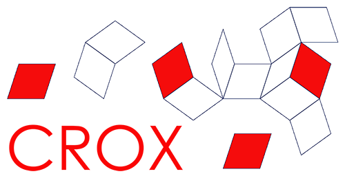

Mathematical Institute
University of Oxford

Croatia + Oxford = CROX
Split, Croatia · 28–29 September 2026
CROX 2026
A two-day workshop bringing together researchers from Croatia and Oxford working in mathematical biology and related areas.
The workshop will include short research talks, discussion time and informal networking, with the aim of strengthening research links, sharing current work and exploring opportunities for future collaboration.
The programme intentionally brings together a broad range of mathematical, biological and interdisciplinary perspectives.
Organisation
University of Oxford
University of Split
PMF Split
Faculty of Science
University of Zagreb
Karla Bonic-Babic — University of Oxford, Lead organiser
Vesna Gotovac Đogaš — University of Split
Marko Radulović — University of Zagreb
Hrvoje Šikić — University of Zagreb
Programme
Day 01
Afternoon
Welcome, research talks, coffee and time for discussion and informal networking.
Day 02
Morning – early afternoon
Research talks, discussion and lunch, with the remainder of the afternoon free for informal interaction or travel.
Split, Croatia
Ruđera Boškovića 33
21000 Split
Croatia
The workshop will take place in the Sky Bar at the top of the Faculty building.
Planning your visit
There is no registration fee for the workshop.
Participants are expected to arrange and cover their own travel.
Participants are expected to arrange and cover their own accommodation.
Funding & acknowledgements
This workshop has been funded by the European Union – NextGenerationEU through the National Recovery and Resilience Plan 2021–2026, Institutional Grant of the University of Zagreb Faculty of Science (IK IA 1.1.3. Impact4Math).
Get in touch
For questions about the workshop, please contact:
info@crox.science